Alternate Installation
Dieser Artikel wurde für die folgenden Ubuntu-Versionen getestet:
Ubuntu 16.04 Xenial Xerus
Ubuntu 14.04 Trusty Tahr
Zum Verständnis dieses Artikels sind folgende Seiten hilfreich:
Hinweis:
Die Partitionstabelle kann erhalten bleiben - bei einer BIOS-Installation kann die MSDOS- sowie bei einer EFI-Installation die GPT-Partitionstabelle weiter benutzt werden.
Alle folgenden Angaben zu Partitionen (z.B. /dev/sda3) sind beispielhaft und müssen sinngemäß zum eigenen System umgesetzt werden. Bei den Abfragen zur Formatierung sind die Gegebenheiten hinsichtlich "primäre" bzw. "logische" bei der Auswahl der Partition zu beachten. Je nach Partitionstabelle muss man dann eine "primäre" bzw. "logische" Partition auswählen.
In dieser Anleitung wird erklärt, wie man das gesamte System bei der Alternate Installation mit Ausnahme der /boot-Partition verschlüsselt. Im Gegensatz zu System verschlüsseln oder System verschlüsseln/Schlüsselableitung erfordert dies wenig bis gar kein Wissen über Verschlüsselung im Allgemeinen, LUKS oder LVM und ist auch von Einsteigern leicht nachzuvollziehen.
Wie immer gilt: Wenn sich auf dem Computer schon ein Betriebssystem (wie beispielsweise Windows, Mac OS X oder ein anderes Linux-System) oder andere, wichtige Daten sich befinden, sollte von den Daten unbedingt eine Sicherung erstellt werden. Wie bei jeder Veränderung am Computer kann immer auch etwas schiefgehen.
Vorbereitungen¶
Als Vorbereitung lädt man sich ein alternate.iso (zur Zeit nur noch für  Lubuntu verfügbar) oder ein mini.iso herunter und bringt dieses ISO auf eine CD bzw. auf einen USB-Stick.
Lubuntu verfügbar) oder ein mini.iso herunter und bringt dieses ISO auf eine CD bzw. auf einen USB-Stick.
Experten-Info:
Für ein EFI Bootmanagement muss es ein amd64.iso sein. Um das auf einen Rechner mit einem bestehenden EFI Bootmanagement starten zu können, muss der USB-Stick nach der Anweisung
aufbereitet werden.
Mit diesen aufbereiteten Datenträgern startet man den Rechner bis zum Punkt Partitionierung über die
Sprachauswahl
Tastaturauswahl
Netzwerkauswahl
um die weitere Installation vorzubereiten, die wie nachfolgend detailiert beschrieben / bebildert dargestellt auszuführen.
Hinweis:
Bei einigen Installationen im "Alternate"-Modus erscheint ggf.:
Es wurden keine Kernel-Module gefunden....
Installation ohne Kernel-Module fortsetzen?
Diese Abfrage muss mit [Ja] beantwortet werden.
Partitionierung¶
Man wählt die Partitionierungsmethode "Manuell". Es ist auch möglich, über "Geführt - gesamte Platte mit verschlüsseltem LVM" das System zu verschlüsseln, nur wird dabei die gesamte Festplatte benutzt und nicht nur ein Teil, wie es bei Dualboot und Multi-Boot üblich ist.
Hinweis:
Die folgende Aufteilung der Festplatte sei als Beispiel vorgegeben, diese variiert natürlich von System zu System sowie nach der Art der Installation des bereits vorhandenen Betriebssystems und der Partitiontabelle.
Bei einer GPT und ab Windows 8 ergeben sich z.B.:
/dev/sda1 bis /dev/sda3
primäre Partition mit einem installierten Windows
freier Bereich für die Ubuntu Installation
Das Ziel ist die folgende Aufteilung:
Partitionen mit einem installierten Windows (unverändert)
erste neue Partition - unverschlüsselte Boot-Partition /boot
restlicher freier Bereich
verschlüsseltes LVM-Laufwerk mit den Partitionen
swap - Auslagerungspartition
/ - Rootpartition
Man kann natürlich auch noch eine extra Homepartition /home in dem LVM-Laufwerk anlegen, wenn man möchte.
Experten-Info:
Bei einer EFI-Installation wird die vorhandene EFI-Partition automatisch mit benutzt und darf nicht neu angelegt werden.
In dem Beispiel werden die Systempartitionen in einer LVM-Gruppe angesiedelt, so dass man nur ein Passwort beim Systemstart eingeben muss. Es ist selbstverständlich möglich, den Abschnitt "Datenträger verschlüsseln" mehrfach durchzuführen, dafür aber "LVM-Gruppe einrichten" zu überspringen, um jede Partition einzeln zu verschlüsseln. Resultat davon ist aber, dass man nach mehreren Passwörtern beim Systemstart gefragt wird, was auf die Dauer nerven könnte.
Anlegen der Bootpartition¶
Die Boot-Partition darf nicht verschlüsselt werden, da zu diesem Zeitpunkt noch keine Entschlüsselungsprogramme geladen sind.
Man selektiert den unformatierten Bereich mit den Pfeiltasten und drückt ⏎ . Dann wählt man "Eine neue Partition erstellen" aus und gibt als Größe einen Wert bis zu 1 GiB ein.
Experten-Info:
Je nach Partitionstabelle muss man eine "primäre" bzw. "logische" Partition auswählen und diese an den Anfang des noch freien Bereiches anordnen.
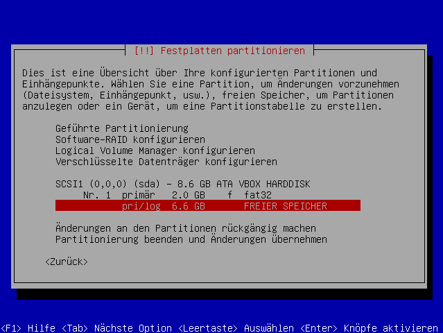
Hinweis:
Auf der Boot-Partition werden die Dateien für die Kernel und vom GRUB 2-Bootloader zum Starten des Systems gespeichert. Eine Kernelversion belegt bis zu 75 MiB. Mit 0,5 bis 1 GiB kann man also ausreichend Kernelversionen speichern.
Es empfiehlt sich aber, von Zeit zu Zeit alte Kernel manuell zu deinstallieren.
Für eine Boot-Partition ist eine Formartierung mit "Ext2" ausreichend, da auf dieser Partition überwiegend lesende Zugriffe erfolgen.
In der folgenden Übersicht wählt man mit den Pfeiltasten ↓ + ↑ und ⏎
"Benutzen als:" -> z.B.: "Ext4 journaling file system"
"Einhängepunkt (mount point):" -> "/boot"
und schließt mit ⏎ die jeweilige Auswahl ab.
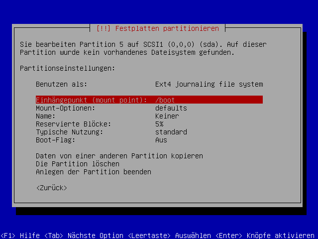
Wenn alle Daten stimmen, beendet man die Partitionierung über "Anlegen der Partition beenden".
Datenträger verschlüsseln¶
Als nächstes muss man den Speicherplatz bestimmen, der als Datenträger verschlüsselt werden soll. Dazu wählt man im Menü "Verschlüsselte Datenträger konfigurieren". In dieser Maske kann man dann entscheiden, den gesamten, noch verfügbaren Speicherplatz oder nur einen bestimmten Bereich zu verschlüsseln.
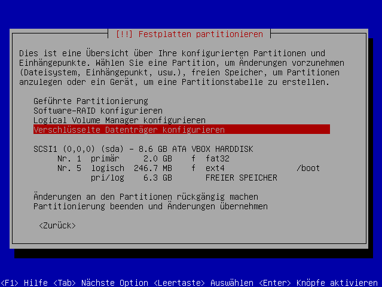
Wenn jetzt gefragt wird, ob man die vorhergehenden Änderungen übernehmen will, bestätigt man das natürlich mit "Ja". Auch alle weiteren Abfragen dieser Art während der Installation muss man mit "Ja" beantworten. Es schadet aber nicht, vor der Bestätigung noch einmal die Übersicht durchzusehen, ob alles so partitioniert und eingerichtet werden soll, wie man es wünscht.
Im Verschlüsselungsmenü wählt man zuerst "Create encrypted volumes", um den verschlüsselten Datenträger auszuwählen.
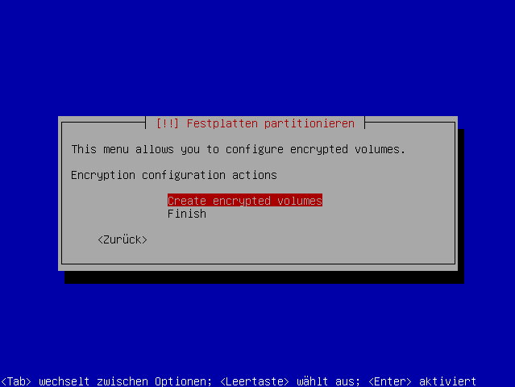
In der darauf folgenden Auswahl navigiert man mit den Cursortasten zum Eintrag des unpartitionierten Bereiches (erkennbar am "FREIER SPEICHER"in der Anzeige) und markiert diesen mit der Leertaste .
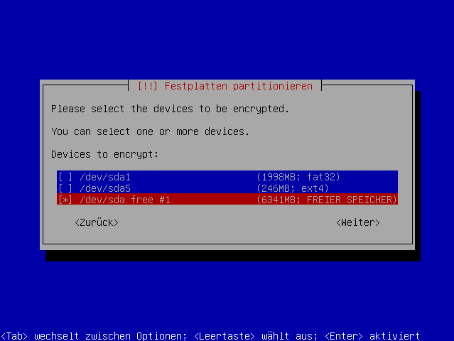
Danach ist der Datenträger für die Verschlüsselung auch schon fertig konfiguriert, und man kann das "Anlegen der Partition beenden".
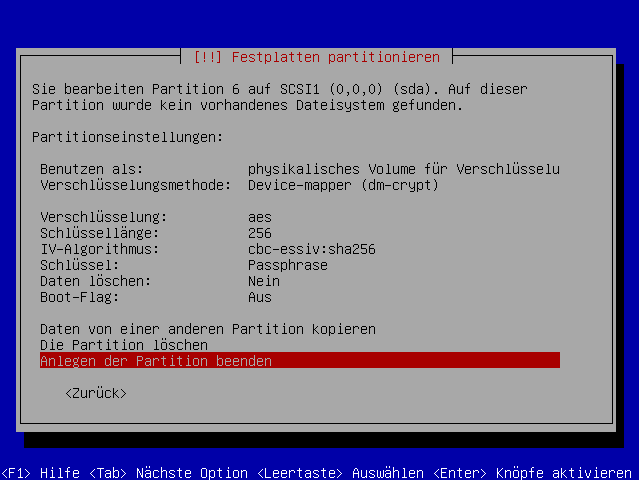
Hinweis:
Natürlich kann man nach Wunsch auch noch die "Verschlüsselung", die "Schlüssellänge" oder den "IV-Algorithmus" ändern, die Standardwerte sind aber normalerweise vollkommen ausreichend.
Aber ohne ein sicheres Kennwort nutzt die stärkste Verschlüsselung nichts! Wie man Passwörter am besten wählt, steht unter Sicherheits 1x1.
Zurück im Verschlüsselungsmenü wählt man "Finish", um den Vorgang abzuschließen.
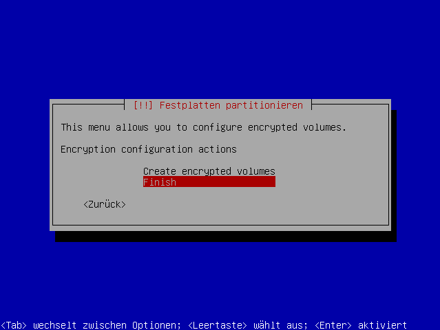
Man wird danach nach einer Passphrase gefragt, die man am Anfang jedes Systemstarts eingeben muss, damit man auf die verschlüsselten Daten zugreifen kann. Da man das Passwort nur einmal pro Start eingeben muss, kann und sollte es ruhig etwas länger sein (siehe auch Sicherheits 1x1).
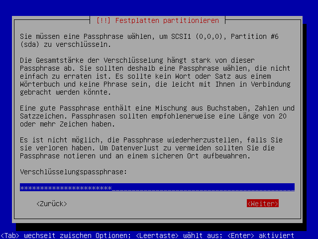
Die Passphrase muss man danach zur Sicherheit erneut bestätigen.
LVM-Gruppe einrichten¶
Nun muss man innerhalb der verschlüsselten Partition (im Beispiel sda6_crypt) noch die Systemfestplatte und die Auslagerungspartition einrichten. Hierzu greift man auf den Logical Volume Manager zurück und wählt im Hauptmenü "Logical Volume Manager konfigurieren".
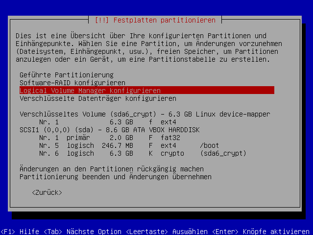
Im LVM-Menü muss man zuerst eine "Volume-Gruppe erstellen", diese dient als Behälter für die anderen Partitionen. Als Name für die Volume-Gruppe gibt man der Einfachheit halber "lvm" an, bestätigt mit Enter ⏎ und wählt im nächsten Schirm mit der Leertaste die gerade eben verschlüsselte Partition als Gerät für die neue Volume-Gruppe (im Beispiel /dev/mapper/sda6_crypt).
Hinweis:
Es empfiehlt sich, einen etwas eindeutigeren Namen als "lvm" zu benutzen, damit es nicht zu Komplikationen kommt, wenn man beispielsweise eine externe HD mit gleich lautender Volumne-Gruppe einbindet.
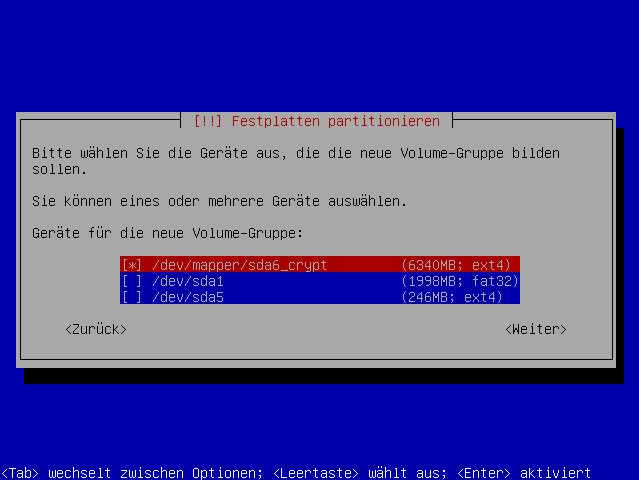
Zurück im LVM-Menü muss man die Systempartition als "Logisches Volume erstellen".
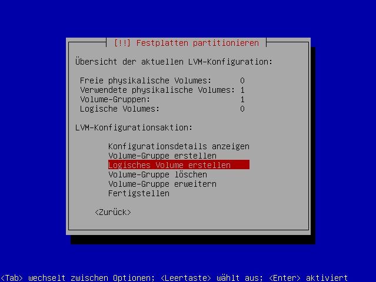
Als Name gibt man "root" ein und wählt danach als Volume-Gruppe die eben eingerichtete "lvm". Als Speichergröße für das Volume sollte man soviel benutzen, dass am Ende noch ca. 1 GiB für die Auslagerungspartition übrig bleibt.
Analog zu diesem Vorgehen richtet man die Auslagerungspartition mit dem Namen "swap" und dem restlichen Speicherplatz (also 1 GiB wie zuvor erwähnt) ein.
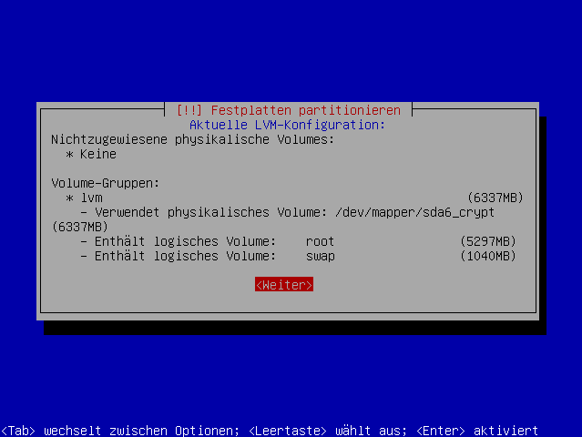
Im LVM-Menü sollte man sich zum Abschluss noch einmal die "Konfigurationsdetails anzeigen", ob alle Angaben stimmen. Falls ja, kann man die Einrichtung mit der Auswahl von "Fertigstellen" beenden.
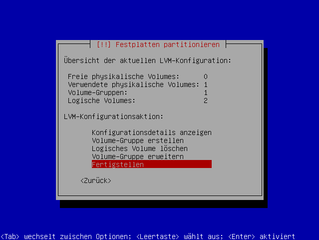
Systempartitionen erstellen¶
Der letzte Schritt umfasst das "herkömmliche" Formatieren, wie es auch bei der Alternate-Installation beschrieben ist.
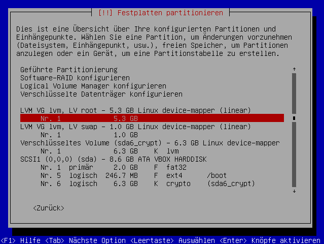
Das heißt, das logische Volume "root" benutzt man als "Ext4 journaling file system" und wählt als Einhängpunkt "/" (Root). Analog dazu verfährt man mit "swap", welches man als "Auslagerungsspeicher (Swap)" benutzt.
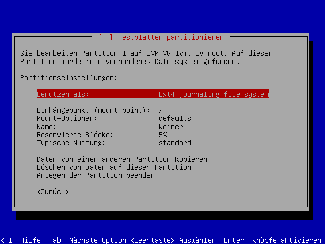
Installation fortsetzen¶
Im Hauptmenü sollte man nun noch einmal über alle Angaben schauen und bei Gefallen die "Partitionierung beenden und Änderungen übernehmen".
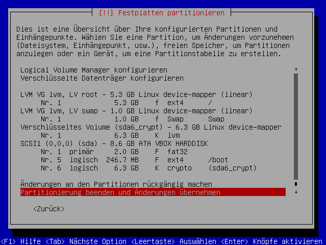
Zur Sicherheit wird danach noch einmal darauf hingewiesen, welche Partitionen erstellt/geändert und formatiert werden sollen. Dies bestätigt man mit "Ja".
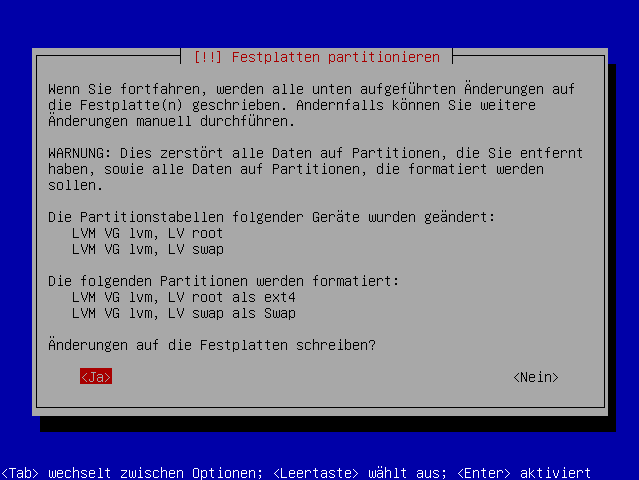
Damit ist die Einrichtung der Festplatte abgeschlossen, und man kann das System wie gewohnt weiter installieren.
Bei einem mini.iso muss man dann u.a. die Abfrage zur Version in der Auswahlmaske entsprechend
mit den Pfeiltasten ↓ + ↑ und der -Taste auswählen
mit der ⏎ -Taste abschließen
Hinweis:
Die Frage während der Installation, ob man das Homeverzeichnis verschlüsseln will, kann man auf einem Einzelplatzsystem getrost verneinen. Es ist nicht notwendig, dass man sein System doppelt absichert. Handelt es sich um ein Mehrbenutzersystem, ist es zu überlegen, ob man sich zusätzlich gegen die Einsicht von anderen Benutzern auf dem Rechner schützt. Natürlich empfiehlt sich die Verschlüsselung auch, wenn man die Homepartition /home separat angelegt und nicht in das verschlüsselte LVM eingetragen hat.
Danach wird dann die Installation, bei einer normalen "Alternate"-Installation mit einer Abfrage zum MBR beendet. Bei einer EFI-Installation wird die vorhandene EFI-Partition automatisch ohne weitere Abfrage verwendet.
Ab sofort wird man vor jedem Systemstart einmal nach der oben vergebenen Passphrase befragt. Wenn diese korrekt eingegeben wird, startet das System ganz normal, ohne dass der Anwender sonst etwas von der Verschlüsselung bemerkt.
Links¶
Alternate Installation - Hauptartikel
EFI Bootmanagement - Hilfreiche Hinweise und Informationen
- Erstellt mit Inyoka
-
 2004 – 2017 ubuntuusers.de • Einige Rechte vorbehalten
2004 – 2017 ubuntuusers.de • Einige Rechte vorbehalten
Lizenz • Kontakt • Datenschutz • Impressum • Serverstatus -
Serverhousing gespendet von